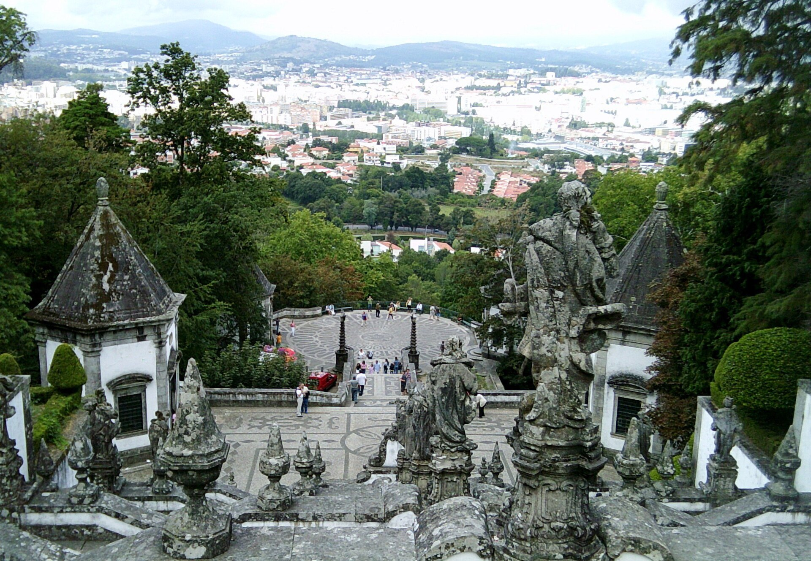
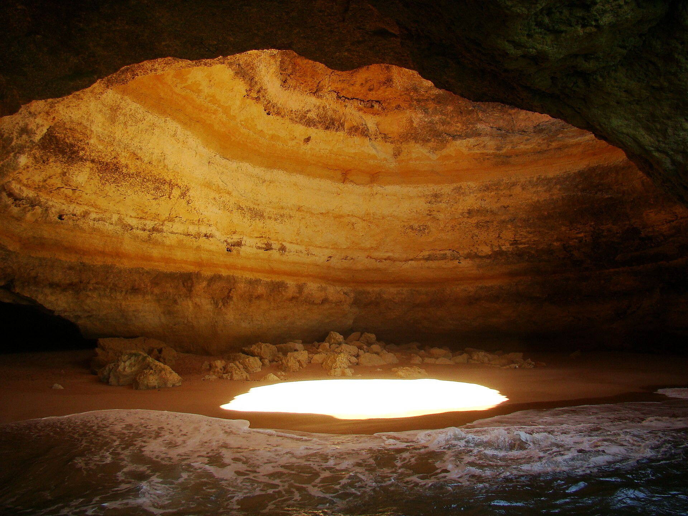

Portugal — Pontos Turísticos
Galeria de fotos de Portugal
Seis olhares sobre a arquitetura, as cidades e as paisagens de Portugal.

Torre de Belém — Lisboa
Símbolo da Era dos Descobrimentos! Beleza à beira do rio Tejo.

Palácio da Pena — Sintra
Cores vibrantes no topo da serra! Parece um castelo de conto de fadas.

Ribeira — Porto
Casas coloridas à beira do rio Douro! Vinhos, pontes e tradição.

Bom Jesus do Monte — Braga
Escadaria monumental com vista panorâmica! Fé e beleza natural.

Grutas de Benagil — Algarve
Águas claras e falésias douradas! Uma das praias mais bonitas da Europa.

Lagoa das Sete Cidades — Açores
Duas lagoas, uma azul e outra verde! Paraíso vulcânico.